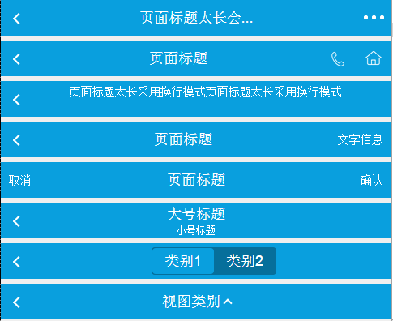
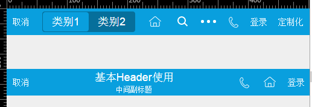

上次，我们形成了两种header的布局，一种flexbox，一种float，最后与身边做重构的同事交流下来，选择了float的布局。
事实上布局的选型不需要我关注，我的参与或者一些意见多数是自我提升，但要说html结构完全控制于csser的话就不一定了
在整个header组件的代码过程中，我与重构同事就一些地方发生了重复的交流，争论，今天就header组件的布局以及功能实现，聊一聊js与css的配合
然后header组件本身是一个老组件，我们顺便探讨下，这类老组件应该如何翻新比较合适。
最初的结构
最开始重构的同事给了我一个已经做好了的页面：

我们针对其中一些小的体验上做了讨论，并且知会到设计组，便改了，很顺畅，然后我开始了愉快的代码，这是其中一块HTML的结构：
1 <header class="cm-header" style="top: 50px;"> 2 <span class="fl cm-header-icon icon-back "></span> 3 <span class="fr cm-header-btn">确认</span> 4 <span class="fr cm-header-icon"><i class="icon-home"></i></span> 5 <span class="fr cm-header-icon"><i class="icond-list"></i></span> 6 <h1 class="cm-page-title"> 7 页面标题</h1> 8 </header>
这里除去h1标签中的文字不说，因为其中可能表现的非常复杂，我们后面再说，其中的按钮有以下功能：
① 第二行：回退按钮
② 第三行：确认
PS：左边采用float布局所以第一个元素在最右边
③ 第四行：home标签
④ 第五行：三个点，点击会出一个侧边栏
以上便是HTML的实现，但是对与程序员来说，头部除了按钮（btn）以外就只有图标（icon），所以以上的结构事实上js一般是不买账的
Jser需要的结构
与重构同事交流下来，原因是这样的：
① 因为回退比较特殊，所以多了一个样式，具体什么我没记住了
② icon代表背景图，icond代表CSS3画的，CSS3画的可扩展性高，比如换颜色什么的
③ ......
当时双方的讨论还是比较激烈的，但是对icond全部变成icon，重构同事不同意，于是也就作罢，经过一轮讨论，结构变成了这样：
1 <header class="cm-header" style="top: 50px;"> 2 <span class="fl cm-header-icon"><i class="icon-back"></i></span> 3 <span class="fr cm-header-btn">确认</span> 4 <span class="fr cm-header-icon"><i class="icon-home"></i></span> 5 <span class="fr cm-header-icon"><i class="icond-list"></i></span> 6 <h1 class="cm-page-title"> 7 页面标题</h1> 8 </header>
做了很小的变化，将back的结构与其它icon类型按钮做了统一，于是我开始了愉快的代码
PS：注意，icond与icon类型的标签会不同程度的在header处出现，无法控制
结构的问题
因为公司的header一直便存在，我做的过程中必须考虑到两个方面的问题：
① 方便扩展但是要做到接口兼容
② 需要通过各个标签的tagname与Hybrid进行联调
也就是说，每个标签叫什么名字，是已经定死了的，甚至一些标签的回调也被限制了，我这里的数据结构大概如下：
1 { 2 left: [], 3 center: [], 4 right: [ 5 { 6 'tagname': 'home', callback: function () { 7 console.log('返回'); 8 } 9 }, 10 { 'tagname': 'search' }, 11 { 12 'tagname': 'list', callback: function (e) { 13 //...... 14 } 15 }, 16 { 'tagname': 'tel', 'number': '56973144' }, 17 { 18 'tagname': 'commit', 'value': '登录', callback: function () { 19 console.log('登录'); 20 } 21 }, 22 { 23 'tagname': 'custom', 'value': '定制化', 24 itemFn: function () { 25 return '<span class="cm-header-btn fr js_custom">定制化</span>'; 26 }, 27 callback: function () { 28 console.log('定制化'); 29 } 30 } 31 ]
可以看到，一个tagname一个按钮，而现在问题来了：我们并不知道某个tagname应该是icon或者是icond
但是根据是否存在value字段，我们是可以判断其是否应该具有i子标签，这个时候我们是怎么解决的呢？
建立tagname与classname的映射关系，比如：
1 var map = { 2 'home': 'icon', 3 'list': 'icond' 4 }
当然，这种做法，自然十分让人感到难受，如果小图标统一为icon，我在模板中可以统一如此代码：
1 <span class="cm-header-icon <%=dir %> js_<%=item.tagname %>" > 2 <% if(item.value) { %> 3 <%=item.value %> 4 <% } else { %> 5 <i class="icon-<%=item.tagname %>"></i> 6 <% } %> 7 </span>
但是由于多了一个映射关系，我的代码便不好看了，并且业务逻辑还变得复杂了起来，于是带着这些考量再次找到了重构同事，重构同事也很明事理，马上答应改了：
1 <header class="cm-header" style="top: 50px;"> 2 <span class="fl cm-header-icon"><i class="icon-back"></i></span> 3 <span class="fr cm-header-btn">确认</span> 4 <span class="fr cm-header-icon"><i class="icon-home"></i></span> 5 <span class="fr cm-header-icon"><i class="icon-list"></i></span> 6 <h1 class="cm-page-title"> 7 页面标题</h1> 8 </header>
不考虑h1中的样式的话，搞定上面的代码，对我们来说，真的是太简单了啊！！！
1 <header class="cm-header"> 2 <% 3 var i = 0, len = 0, j = 0, keyagain = 0; 4 var left = left; 5 var right = right.reverse(); 6 var item = null; 7 var dir; 8 var btnObj = null; 9 %> 10 <%for(keyagain=0; keyagain < 2; keyagain++) { %> 11 <% 12 if(keyagain == 0) { dir = 'fl'; btnObj = left; } else { dir = 'fr'; btnObj = right; } 13 %> 14 <% for(i = 0, len = btnObj.length; i < len; i++) { %> 15 <% item = btnObj[i]; %> 16 <%if(typeof item.itemFn == 'function') { %> 17 <%=item.itemFn() %> 18 <%} else { %> 19 <span class="cm-header-icon <%=dir %> js_<%=item.tagname %>" > 20 <% if(item.value) { %> 21 <%=item.value %> 22 <% } else { %> 23 <i class="icon-<%=item.tagname %>"></i> 24 <% } %> 25 </span> 26 <%} %> 27 <%} %> 28 <%} %> 29 </header>
PS：从代码着色来看，js中用到的left与Right是关键字，这个得处理...
定制化需求
可以看到，一个循环，我们便可以轻易的生成左边和右边的按钮，但是马上问题来了，我们需要扩展怎么办，上面就会有以下问题：
① tel标签默认是a标签，我们这里却是span标签
1 <a href="tel:56973144" class="cm-header-btn fr js_tel "><i class="icon-tel"></i></a>
② back按钮我们一般会做成a标签，用以解决javascript出错在Hybrid的假死问题
说白了，就是虽然标签按钮应该有统一的结构，但是需要保留定制化的能力
这里定制化的工作交给了各个标签的itemFn这个函数，他返回一个字符串，并且具有一定规则，这里取一个代码片段：
1 handleSpecialParam: function (data) { 2 var k, i, len, item; 3 for (k in data) { 4 if (_.isArray(data[k])) { 5 for (i = 0, len = data[k].length; i < len; i++) { 6 item = data[k][i]; 7 if (this['customtHandle_' + item.tagname]) { 8 this['customtHandle_' + item.tagname](data[k][i], k); 9 } //if 10 } //for 11 } //if 12 } //for 13 }, 14 15 _getDir: function (dir) { 16 var kv = { left: 'fl', right: 'fr' }; 17 return kv[dir]; 18 }, 19 20 //处理back的按钮逻辑 21 customtHandle_back: function (item, dir) { 22 dir = this._getDir(dir); 23 item.itemFn = function () { 24 var str = '<a href="http://m.ctrip.com/html5/" class="cm-header-btn ' + dir + ' js_' + item.tagname + ' " >'; 25 if (item.value) { 26 str += item.value + '</a>'; 27 } else { 28 str += '<i class="icon-' + item.tagname + '"></i></a>'; 29 } 30 return str; 31 }; 32 },
当发现某个按钮不满足需求或者有定制化需求时，便想办法设置其itemFn即可，时候上这个代码可以直接写到初始化的json串去
花样百出的title
到title时，发现其表现便五花八门了，这个时候一般是根据不同的类型生成不同的HTML结构，框架给默认的几个选项，不支持便自己定制itemFn
1 <% item = center; %> 2 <%if(typeof item.itemFn == 'function') { %> 3 <%=item.itemFn() %> 4 <%} else if(item.tagname=='title' || item.tagname=='subtitle') { %> 5 <h1 class="cm-page-title js_<%=item.tagname %>" > 6 <%if(typeof(item.value) == 'object' && item.title.value == 2) { %> 7 <span class="cm-title-l"><%=item.value[0]%></span> 8 <span class="cm-title-s"><%=item.value[1]%></span> 9 <%} else { %> 10 <%=item.value %> 11 <%} %> 12 </h1> 13 <%} else if(item.tagname=='select'){ %> 14 <h1 class="cm-page-select-title js_<%=item.tagname %>" > 15 <%=item.value %> 16 </h1> 17 <%} else if(item.tagname=='tabs') { %> 18 <h1 class="cm-page-tabs-title js_<%=item.tagname %>" > 19 <%for(j = 0; j < item.data.items.length; j ++) { %> 20 <span data-key="<%=item.data.items[j].id %>" class="<%if(item.data.index===j){ %>active<%} %>" ><%=item.data.items[j].name %></span> 21 <% } %> 22 </h1> 23 <% } else{ %> 24 25 <%} %>
事件绑定的实现
header组件本身继承至Abstract.View这个类，所以只要设置
this.events = {}
便能以事件代理的方式将事件绑定至根元素，而header的事件一般就是click事件：
1 setEventsParam: function () { 2 var item, data = this.datamodel.left.concat(this.datamodel.right).concat(this.datamodel.center); 3 4 for (var i = 0, len = data.length; i < len; i++) { 5 item = data[i]; 6 if (_.isFunction(item.callback)) { 7 this.events['click .js_' + item.tagname] = $.proxy(item.callback, this.viewScope); 8 } 9 } 10 },
这里有一个需要注意的点便是，事件绑定的钩子便是我们的tagname，这个是唯一的，我们会为每个标签动态生成“.js_tagname”的类，以方便事件绑定
老接口的兼容
之前便说了，该组件是一个老组件的翻新，于是各个业务团队已经使用了，比如原来是这样调用的：
1 this.header.set({ 2 title: '基本Header使用', 3 subtitle: '中间副标题', 4 back: true, 5 backtext: '取消', 6 tel: { number: 1111 }, 7 home: true, 8 search: true, 9 btn: { title: "登录", id: 'confirmBtn', classname: 'header_r' }, 10 events: { 11 returnHandler: function () { 12 console.log('back'); 13 }, 14 homeHandler: function (e) { 15 } 16 } 17 });
而现在我们期望的调用方式是这样的：
1 this.header.set({ 2 left: [], 3 center: {}, 4 right: [ 5 { tagname: 'home', callback: function () { } }, 6 { tagname: 'tagname', value: 'value', data: {}, itemFn: function(){}, callback: function () { } } 7 ] 8 });
这个时候我们应该怎么做呢？当然是不破不立，先破后立，当然是要求业务团队改！！！然后被无情的喷了回来，于是做了接口兼容
翻新老组件，接口兼容是必须的，如果不是底层机制发生颠覆，而颠覆可以带来颠覆性的成绩，接口还是不建议改！
这里上面便是新接口的调用，下面是老接口的调用，效果如下：

代码&demo
源码：https://github.com/yexiaochai/cssui/tree/gh-pages
demo：http://yexiaochai.github.io/cssui/demo/debug.html#header
反馈：如果文中有何不足，请您留言